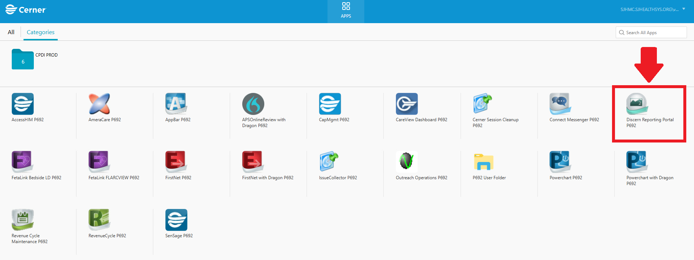
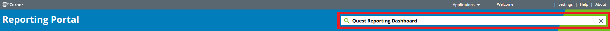
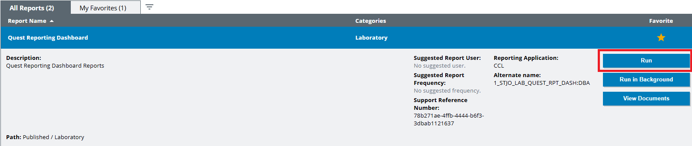
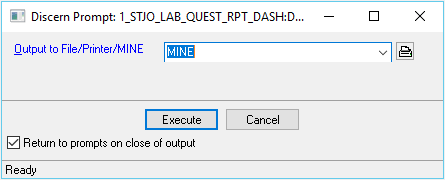

Navigate to your organization's Citrix portal and select the application labeled Discern Reporting Portal P692.
Once the Reporting Portal is open, type "Quest Reporting Dashboard" into the search bar at the top of the page.
The report titled Quest Reporting Dashboard will appear. Click the Run button to begin generating the report. You can also click the star icon to save this report to your favorites for easier access in the future.
The report will prompt for output settings. There is no need to change anything—simply click Execute to run the report.
